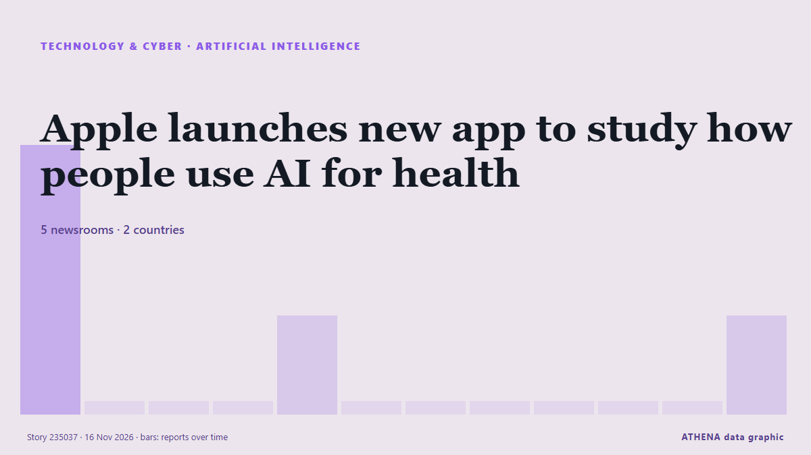

Intelligence artificielle
SponsoriséPrésenté par  Cybernetics and Artificial Intelligence Lab Welcome to the Cybernetics and Artificial Intelligence Laboratory, established at the Department of Business Administration of the National and Kapodistrian University of Athens. The lab is headed by Professor Dimitrios Thomakos. The lab aims to do research that can be published in top venues. Our research uses tools and methods of Artificial Intelligence, and lies in the following areas: - Forecasting - Decision making - Cyber security - Finance We are always looking forward to collaborating with exceptional students!
Cybernetics and Artificial Intelligence Lab Welcome to the Cybernetics and Artificial Intelligence Laboratory, established at the Department of Business Administration of the National and Kapodistrian University of Athens. The lab is headed by Professor Dimitrios Thomakos. The lab aims to do research that can be published in top venues. Our research uses tools and methods of Artificial Intelligence, and lies in the following areas: - Forecasting - Decision making - Cyber security - Finance We are always looking forward to collaborating with exceptional students!
| 3 nov. | 0 |
|---|---|
| 4 nov. | 0 |
| 5 nov. | 0 |
| 6 nov. | 0 |
| 7 nov. | 0 |
| 8 nov. | 0 |
| 9 nov. | 0 |
| 10 nov. | 0 |
| 11 nov. | 1 |
| 12 nov. | 3 |
| 13 nov. | 8 |
| 14 nov. | 4 |
| 15 nov. | 3 |
| 16 nov. | 5 |
Les titres sont affichés en anglais, tels que publiés.

Apple launches new app to study how people use AI for health
Apple's new app for a study will answer everyday medical questions. de TechCrunch
Top tax accountant exam scorer admits to cheating using AI
The top scorer in Korea’s recent tax accountant qualification examination admitted Sunday that he used generative artificial intelligence (AI) and a camera to cheat, reversing his earlier denials… de The Korea Times
Chinese premier urges China, ASEAN to stand united, overcome distractions
Chinese Premier Li Qiang on Monday highlighted the growth of economic cooperation between China and the Association of Southeast Asian Nations (ASEAN), with… de Daily Tribune
Anwar meets Carney in Manila, with Malaysia-Canada energy and digital trade on the table
MANILA, Nov 15 — Efforts to expand trade and investment cooperation, particularly in the energy, digital economy a... de Malay Mail
Hundreds protest data centre in small Aussie town
Hundreds of protesters have gathered at South Australian Parliament to oppose a data centre in a small town. de The Age
Blackstone’s QTS is cutting AI debt sale by more than half
This is after struggling to attract enough demand from investors – and refusing to pay much higher yields. de The Business Times
Humain raises $667m for AI buildout in Saudi Arabia
Funding secured alongside the National Infrastructure Fund. de Data Center Dynamics
EU leaders seek to tackle challenges at first ever AI summit
Meeting comes amid mounting alarm after series of incidents involving rogue AI agents, resignation of Nvidia CEO. de Express Tribune
ChatGPT Wallet lets OpenAI’s Dots agents make purchases for you
OpenAI announced "Businesses in ChatGPT" and aims to rock the business world. de Forbes Business
AI bubble will break; India should be worried: Economist Joseph E Stiglitz at HT Leadership Summit 2026
Nobel laureate and economist Joseph E Stiglitz said at HT Leadership Summit on Saturday he believes the AI investment bubble will break. de Hindustan Times
Police reunite missing minor girl with family in Hubballi
A 17-year-old Australian teenager who went missing for six days has been reunited with his mother. de Al Jazeera English
OpenAI, Google, Anthropic hit with lawsuit seeking halt to frontier AI development
Nonprofits sue AI firms in California, seeking to halt development of ChatGPT, Gemini and Claude. de Express Tribune
Egemen Mustafa Şener puts AI to work in a construction business built in the 1990s
Most construction companies that have been running since the 1990s either resist new technology or adopt it clumsily. de The Portugal News
Amazon’s plan to own the world’s product data and fight AI shopping agents
Amazon's World Product Graph aims to collect data on nearly every product sold worldwide. de Express Tribune
Greek PM: Greece Is at Forefront of Artificial Intelligence Strategy
Greek Prime Minister Kyriakos Mitsotakis has reaffirmed Greece’s commitment to artificial intelligence (AI), saying the country is at the forefront of developing a national strategy for the… de Greek City Times
Google and Samsung’s Gemini smart glasses go on preorder from $395
Google and Samsung have opened preorders for their first Gemini smart glasses, made with Warby Parker and Gentle Monster. de The Next Web
EU leaders to hold first ever talks on AI in Dublin
The EU seeks to strengthen its position in the global AI race while protecting people and businesses from the technology's potential dangers. de Free Malaysia Today
The 4 types of people Dario Amodei said he won’t hire — and what Anthropic looks for instead
Anthropic CEO Dario Amodei said he spends 40-50% of his time focusing on talent and culture. de Business Insider
Norwest pushes deeper into AI with new $4B fund
This is the investment firm's largest fund to date. de TechCrunch